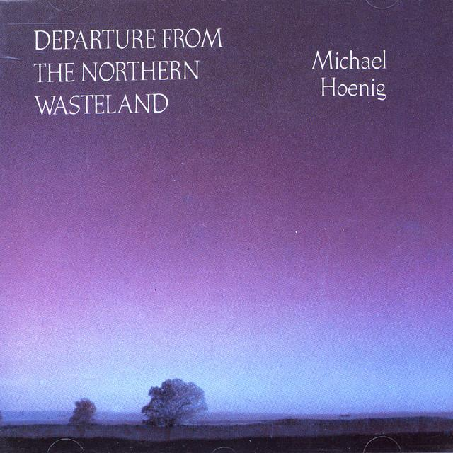

Instrumentation in ambient music is mainly electronic and is designed to create atmosphere rather than a strong beat. Common instruments include synthesisers, samplers, electric pianos, sequencers, and digital sound processors. Ambient composers may also incorporate field recordings and sampled sounds from nature or everyday life. These instruments are often used to produce long sustained tones and evolving textures that blend together to create immersive soundscapes.
Example:
An ambient piece may combine several layers of synthesisers with sampled sounds and electronic effects to create a rich and spacious sound world.